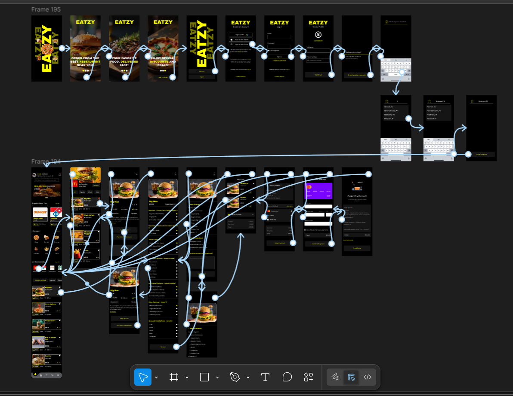

5. TEST
After designing the high-fidelity prototype, I moved into the test phase to validate whether the solution truly solved the users’ problems.
PROTOTYPE

I created an interactive prototype in figma and tested it with two of my male friends.
Tasks Completed
- Create an account and profile.
- Order a meal.
- Navigate screens.
Key Feedback
- They liked that it focused only on food and was not cluttered with groceries or other services.
- They found it easy to move between Home, Search, Orders, and Profile without confusion.
- They liked the large food images and clear pricing.
- They said the checkout process was straightforward and not overwhelming.
- They said they app felt clean and easy to understand.